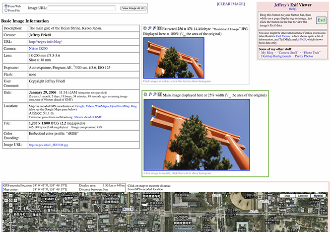

Les métadonnées EXIF
Les métadonnées EXIF sont des informations cachées dans une photo numérique.
Elles sont enregistrées automatiquement par l'appareil photo au moment
de la prise de vue. On y trouve la date, l'heure, le lieu et les
paramètres techniques de la photo.
Source : pixees.fr

Comment lire les métadonnées EXIF ?
- Prends une photo avec ton smartphone ou appareil photo
- Transfère la photo sur ton ordinateur
- Fais un clic droit sur la photo
- Clique sur Propriétés
- Va dans l'onglet Détails
- Tu peux voir toutes les métadonnées EXIF !
Les informations contenues dans les EXIF
- Date et heure : quand la photo a été prise
- Coordonnées GPS : où la photo a été prise
- Marque et modèle : quel appareil a été utilisé
- Résolution : taille de l'image en pixels
- Vitesse d'obturation : durée d'exposition à la lumière
- Ouverture : quantité de lumière entrante
- ISO : sensibilité du capteur à la lumière
Exemple de métadonnées EXIF d'une photo
| Métadonnée | Valeur exemple | Signification |
|---|---|---|
| Date | 2024-03-15 14:32:10 | Date et heure de la prise de vue |
| GPS | 48.8566° N, 2.3522° E | Coordonnées de Paris |
| Appareil | iPhone 15 Pro | Modèle utilisé |
| Résolution | 4032 x 3024 px | Taille de l'image |
| ISO | ISO 100 | Sensibilité du capteur |
| Ouverture | f/1.8 | Quantité de lumière |
Les métadonnées GPS dans une photo peuvent révéler exactement où tu habites si tu postes une photo prise chez toi sur les réseaux sociaux ! La plupart des réseaux sociaux suppriment automatiquement ces données pour protéger ta vie privée.
Vidéo sur les métadonnées EXIF
Voici une vidéo pour mieux comprendre les métadonnées :
Pour aller plus loin
Pour en savoir plus sur les métadonnées EXIF : Wikipedia — Format EXIF
⬆ Retour en haut